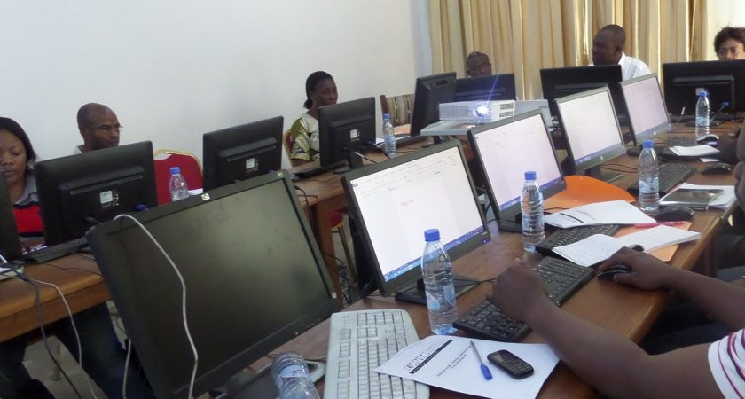

THOMAS SANKARA
Thomas Isidore Noël Sankara était un « Peul-Mossi » issu d’une famille catholique. Son père était un ancien combattant et prisonnier de guerre de la Seconde Guerre mondiale. Il a fait ses études secondaires d’abord au lycée Ouezzin Coulibaly de Bobo-Dioulasso, deuxième ville du pays, puis à partir de la seconde et jusqu’au bac à Ouagadougou, au PMK, le Prytanée militaire du Kadiogo. Il a suivi tout comme son ami Blaise Compaoré une formation d’officier à l’École militaire inter-armée (EMIA) de Yaoundé au Cameroun.......
Suite
MESSAGE DU DIRECTEUR
A l’IPD , nous sommes exigeants sur la démarche et le contenu scientifique de nos enseignements, autant nous colorons le tout d’une couche culturelle bien sénégalaise faite de partage, de convivialité, de joie d’être et de travailler ensemble pour permettre à chacun de tirer le maximum de soi et des autres, au service de sa formation.
C’est-à-dire, qu’entrer à l’IPD, c’est entrer dans une famille moderne avec des valeurs : la solidarité (chacun pour tous, tous pour chacun), le don de soi (chacun comprenant que......
Suite

SEMINAIRES
L’Institut Polytechnique de Dakar a développé une offre de formation professionnelle destinée aux Entreprises, Organisations, Administrations et Collectivités publiques pour leur permettre de rester compétitives face à l’évolution des outils de gestion et des TIC.
A ce titre les formations proposées ont revêtu trois formes avec plusieurs modules standards. A ces types de formations ci-dessous énumérées, s’ajoute la possibilité de concevoir des modules à la demande :les.......
Suite